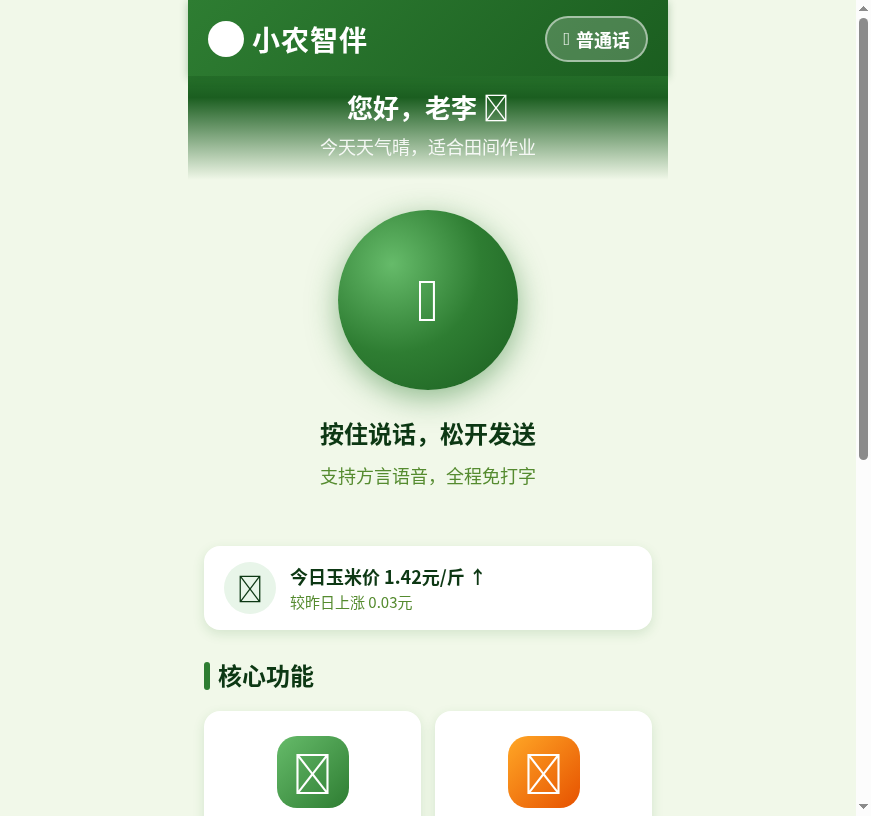
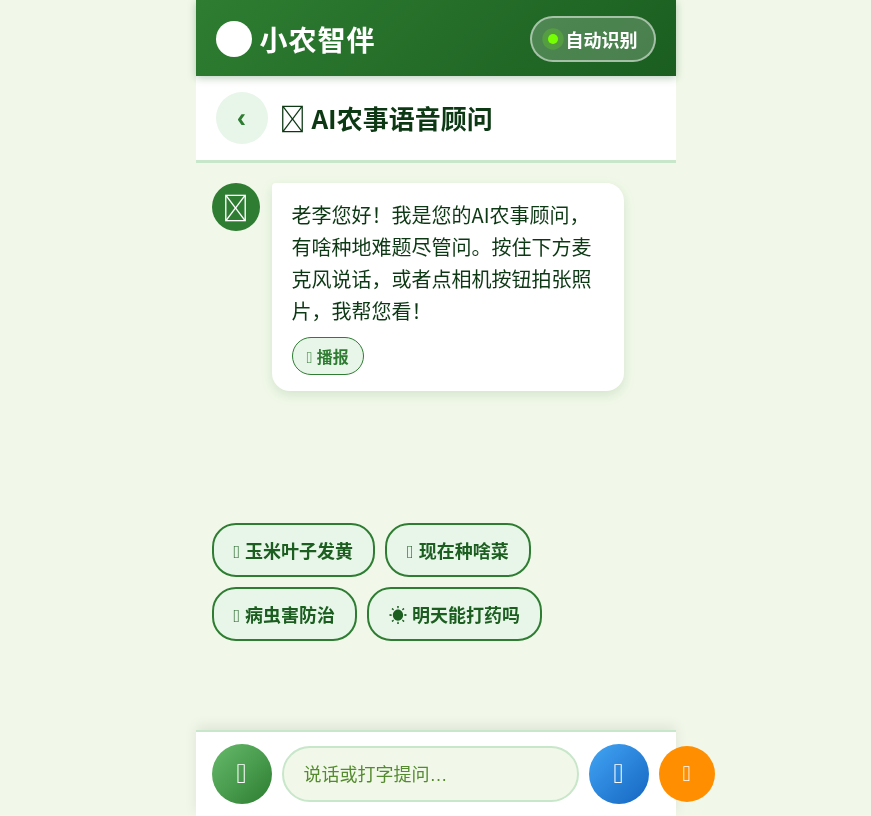
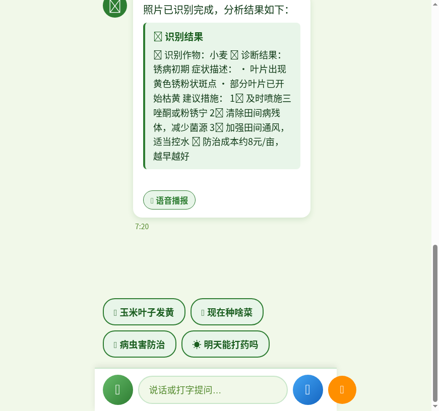
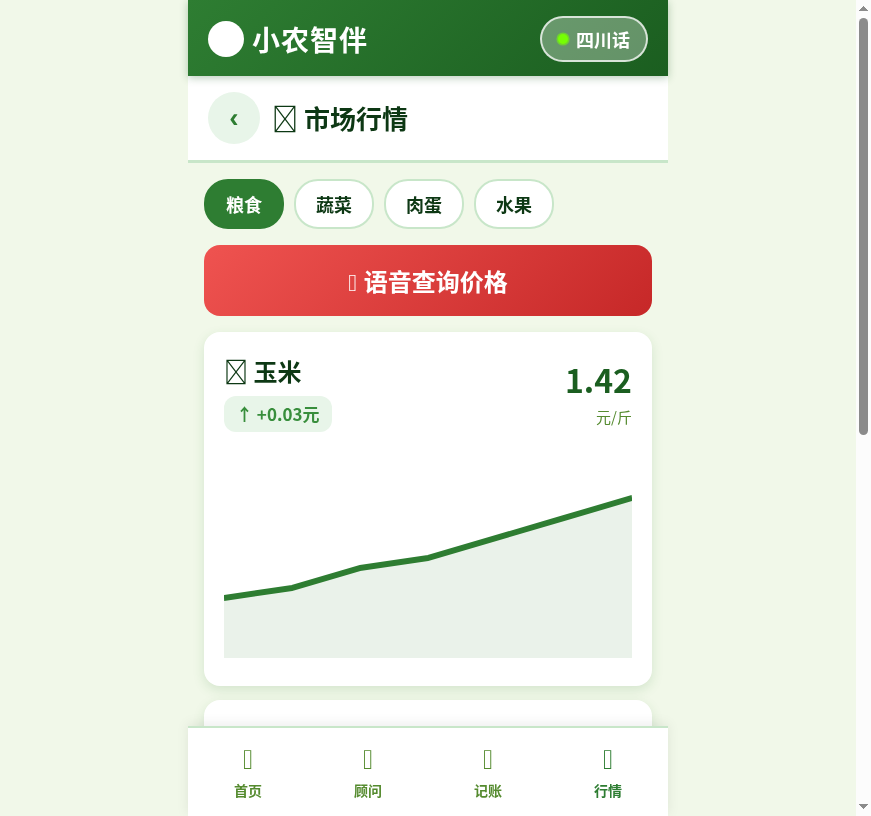
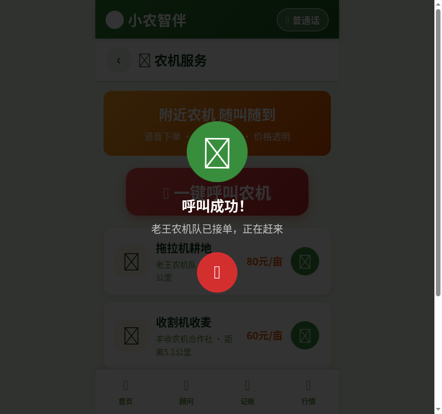
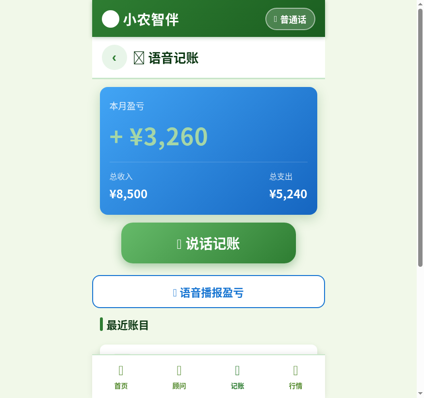
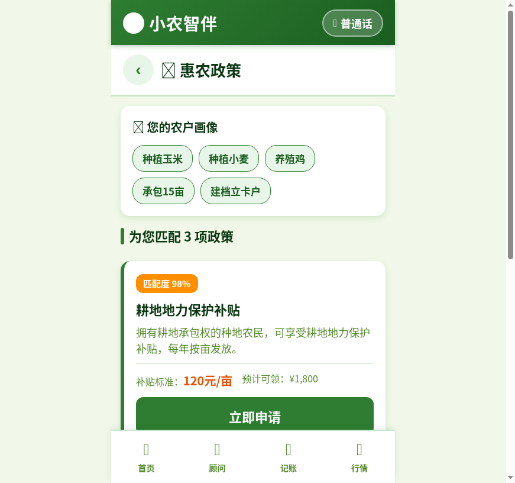

大家好，我是一名产品经理，平时主要做toB系统的需求和设计，写代码这件事对我来说属于"看得懂但写不动"的水平。
这次用 TRAE 做 Demo 的经历，说实话有点超出预期。我脑子里一直有个想法：给农村老人做一个"会听话"的种地助手，因为我自己从小跟着爷爷在河北农村下地干活，看着那辈人到现在还在为问个粮价、查个政策骑车跑镇上。但这个想法搁了大半年，一直卡在"我不会写前端"这一步。
用 TRAE 的过程，就是我把脑子里的需求一句一句说出来，它帮我一行一行写出来。最让我觉得"原来这么简单"的一步，是我说"做一个180像素的超大麦克风按钮，老人一按就能说话"，它直接给了我完整的CSS和交互逻辑——这个按钮如果让我自己写，我大概要查半天文档。TRAE 帮我跨过的坎，就是从"想法"到"能跑的东西"之间那段我原本以为搞不定的距离。
是什么：一个 H5 移动端小程序 Demo，纯前端单页应用，浏览器直接打开即可使用，无需安装。
面向谁：50岁以上农村种植户，尤其是使用老旧智能手机、不擅长打字、普通话不标准的老年农民。
主要功能：

我来自河北的一个小村庄，从小跟着爷爷下地干活。那时候田里总有人扯着嗓子问："今年玉米什么价？""谁家明天用播种机？"——一问一答，全靠两条腿、一张嘴。
二十多年过去了，现在地里的主力，还是我爷爷那辈人——五六十岁、甚至七十多岁的农村老人。他们还是会为一句农业政策，骑车半小时去镇上问；还是会为问个粮价，挨家挨户敲邻居的门。可他们老了，眼睛花了，智能手机上那些小字，看不清楚；那些复杂App，不会用。
所以，我们做了"小农智伴"。
50岁以上农村用户打字速度极慢，很多人只会手写输入，查个农药用法要折腾十分钟。他们需要的是"说话就能用"的交互方式。
现有语音助手基本只认普通话。农村老人说话带浓重方言， Siri和小爱同学经常识别失败，用两次就放弃了。
主流农业App字体小、按钮密、层级深，老人根本找不到功能入口。需要超大字体、高对比度、极简布局。
查病虫害要问邻居，查粮价要赶集问人，叫农机要翻通讯录，申请补贴要跑村委会——这些需求散落在各处，需要一个入口统一解决。
中国有约2亿农业从业人员，其中50岁以上占比超过35%。这群人是真正的"数字弱势群体"——他们有真实需求，但市面上的产品几乎不为他们做适配。我选择适老化+全语音这个方向，是因为我认为技术应该去迁就人，而不是让人去学技术。这个判断也决定了整个Demo的设计原则：能用嘴说的绝不用手点，能显示大的绝不显示小，能一步到位的绝不让你翻页。
本Demo为纯前端H5应用，已打包为HTML文件，下载解压后用浏览器打开即可体验全部功能。
建议使用 Chrome / Edge 浏览器，手机模式浏览效果最佳。
体验提示：点击首页大麦克风按钮可触发语音交互；点击右上角"自动识别"可查看方言识别状态；进入"AI农事顾问"后点击底部蓝色相机按钮可体验拍照识别功能。
整个Demo从想法到可运行，经历了4轮对话迭代，每一轮我只需要用自然语言描述需求，TRAE负责把需求转化为完整的前端代码。下面是完整的开发流程：






以下为开发过程中4轮关键对话的 Session ID，证明本Demo由 TRAE 开发完成：
整个Demo的技术架构分为三层：
| 层级 | 技术方案 | 实现内容 |
|---|---|---|
| 语音输入层 | Web Speech API (SpeechRecognition) | 实时语音转文字，支持zh-CN/zh-HK，降级模拟模式 |
| 意图理解层 | NLU加权评分模型（Trae大模型NLU预留接口） | 5大意图分类+实体提取（农作物/金额/农机类型） |
| 语音播报层 | Web Speech API (SpeechSynthesis) | 中文音色优选（微软晓晓/macOS Ting-Ting），方言匹配 |
| 视觉识别层 | FileReader + 模拟分析（Trae视觉大模型预留接口） | 拍照/相册选图，AI返回结构化诊断报告 |
坑1：底部导航栏与输入栏层级冲突。顾问页面新增底部输入栏后，和全局底部导航栏重叠了。TRAE帮我在 navigate() 函数中加了判断：进入顾问页时隐藏导航栏、显示输入栏，离开时恢复。这个坑如果自己排查可能要半小时，TRAE一次就改对了。
坑2：btoa编码中文报错。测试拍照识别时，用btoa编码SVG图片数据报错"characters outside of the Latin1 range"。TRAE改用encodeURIComponent方案绕过了编码限制。这种边界case自己写很难提前想到。
坑3：低端设备动画卡顿。考虑到农村老旧手机性能有限，TRAE加了硬件检测逻辑——当 navigator.hardwareConcurrency ≤ 2 时自动禁用所有CSS动画，保证流畅度。这个适老化细节是我没想到的。
用TRAE做这个Demo，我最大的感受是：它改变了"想法"和"实现"之间的距离感。以前我有个产品想法，要找开发、排期、写PRD、走评审，周期至少两周。现在我把需求说清楚，一个下午就能看到能跑的东西。
但TRAE不是万能的，关键还是需求描述要精准。比如我说"适老化"，如果不说清楚具体是多大字体、什么对比度、按钮多大，它会给一个通用的"大字体"方案。只有我说"基础字号20px、按钮最小52px、对比度4.5:1"，它才能给出真正符合WCAG标准的设计。产品经理定义需求的能力，决定了TRAE产出的上限。